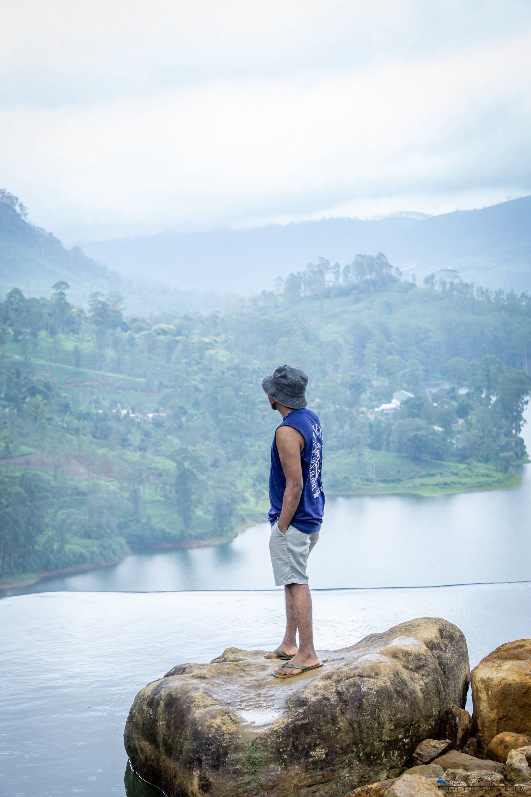
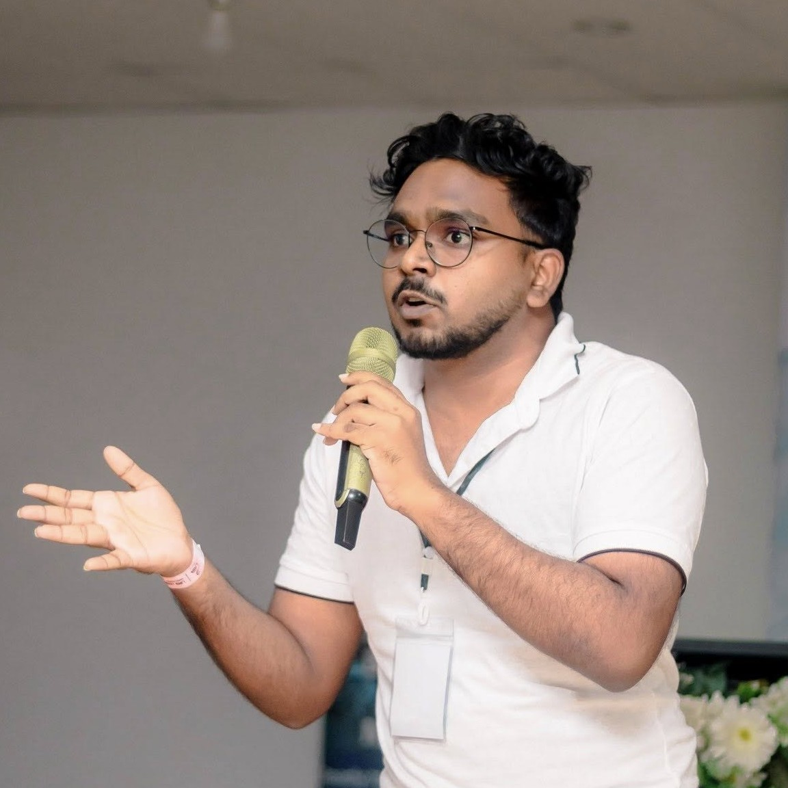

Fun in Life
Beyond the Lab
Engineering is my work — curiosity, sport, and community are my life.




Open to Research Opportunities
|
Final-year Biomedical Engineering undergraduate at the University of Moratuwa — building autonomous robotic systems that interact safely with humans through learning-based control, computer vision, and AI.
About
My research focuses on developing autonomous robotic systems that interact safely and efficiently with humans in dynamic environments.
Experience
Projects
From competition robots to clinical systems — a selection of what I've engineered.
Augmented the CVPR 2025 RoboBrain baseline with a dedicated LLM layer for complex hierarchical task decomposition. Achieved 50% memory reduction via 8-bit quantization, enabling deployment on constrained hardware.
CUDA-accelerated image processing pipeline achieving 40% latency improvement in lumbar spine landmark detection. Designed for clinical deployment in autonomous robotic ultrasound procedures.
A pediatric BCI system controlling a 5-DOF robotic arm via real-time EEG processing with custom low-noise PCBs for biopotential amplification — enabling motor-impaired children to interact with physical environments.
Implemented FOC algorithms on STM32 for precise torque regulation in BLDC motors. Designed custom drivers with optimised power electronics, integrated into an autonomous mobile platform for competitive maze navigation.
Integrated mechatronic system combining SolidWorks design, custom Altium PCBs, and OpenCV for precision object manipulation with real-time visual servoing and closed-loop feedback.
High-speed autonomous robot using the FloodFill algorithm with optimised traversal strategies. Custom STM32-based control with FOC motor drivers for maximum speed in competitive maze navigation.
Autonomous mobile robot with integrated embedded control systems and sensor fusion algorithms for competitive performance at the Sri Lanka Robotics Challenge 2024.
Forward and inverse kinematics algorithms with trajectory planning using the MATLAB Robotics Toolbox for precision manipulation tasks across multiple degrees of freedom.
Real-time human detection and tracking system using OpenCV with a GUI interface for surveillance and mobile robotics applications — supports multi-target tracking across camera feeds.
Skills
Contact
Always eager to collaborate on innovative biomedical projects, discuss the latest in robotics and AI, or explore research opportunities.
Department of Biomedical Engineering
Katubedda, Moratuwa 10400, Sri Lanka
I'm actively seeking research collaborations, internships, and graduate study opportunities in robotics, AI, and biomedical engineering. If you're working on something exciting — let's talk.
Download CVFun in Life
Engineering is my work — curiosity, sport, and community are my life.

